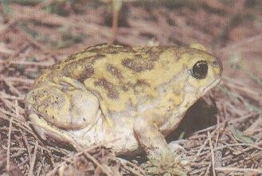

मार्बल्ड बैलून मेंढकMarbled Balloon Frog
Uperodon systoma · Microhylidae · AMP-0015

- Scientific name वैज्ञानिक नाम
- Uperodon systoma (Schneider, 1799)
- Family कुल
- Microhylidae
- Hindi हिंदी
- मार्बल्ड बैलून मेंढक
- Local names स्थानीय नाम
- marbled balloon frog, balloon frog, mota mendhak, dholak mendhak
- Status here यहाँ की स्थिति
- native
- Movement आवागमन
- Resident, here all year
- Known from कहाँ दर्ज
- Others have published records from the wider Awadh–Purvanchal plain, none yet from Basti–Ayodhya अवध–पूर्वांचल से दूसरों के प्रकाशित अभिलेख, बस्ती–अयोध्या से अभी नहीं
- IUCN IUCN
- not evaluated
- Review समीक्षा
- not yet reviewed
When to look कब देखें
Present all year. साल भर मौजूद।
Tell it apart from इनसे अलग पहचानें
मार्बल्ड बैलून मेंढक / Marbled Balloon Frog
Uperodon systoma (Schneider, 1799) — Microhylidae
मार्बल्ड बैलून मेंढक — यह गेंद या गुब्बारे जैसा गोल-मटोल मेंढक है जो जमीन के भीतर बिल बनाकर रहता है। इसका शरीर फूला हुआ, सिर बहुत छोटा और थूथन नुकीली होती है। त्वचा पर पीले और काले रंग का संगमरमर जैसा सुंदर जाल बना रहता है। इसके पिछले पैरों में खुरपी जैसे सख्त उभार होते हैं जिनसे यह बहुत तेजी से पीछे की ओर मिट्टी खोदकर जमीन में समा जाता है। यह जमीन के भीतर रहकर मुख्य रूप से दीमकों और चींटियों को खाता है।
Quick Identification त्वरित पहचान
| Feature | Description |
|---|---|
| Body shape | Extremely globular, stout, spherical body resembling an inflated balloon |
| Head & Mouth | Very small, pointed head with a tiny mouth and narrow gape, lacking teeth |
| Coloration | Pale yellowish-olive or pinkish-cream, heavily marbled with dark brown or black reticulations |
| Digits | Short fingers without webs; toes webbed at the base with shovel-shaped metatarsal tubercles |
| Burrowing organ | Large, sharp-edged, shovel-like inner metatarsal tubercle adapted for rapid backward digging |
| Breeding call | Deep, resonant low-pitched drone resembling a distant horn or bellow, produced after heavy downpours |
Field tip: Listen for deep resonant bellowing calls around muddy rain pools in agricultural fields immediately following the first heavy monsoon deluge.
हिंदी: इसका शरीर गुब्बारे जैसा गोल और मुंह बहुत छोटा होता है। पीठ पर काले और पीले रंग का संगमरमरी जाल होता है और पिछले पैर में मिट्टी खोदने वाला सख्त अंग होता है।
Morphology आकारिकी
The body is exceptionally globular and heavily built, with a small triangular head that merges directly into the body without an evident neck. The snout is very short, rounded, and projecting. The nostrils are close to the tip of the snout. The eye is small and prominent, with a circular pupil. The tympanum is entirely hidden beneath skin. The skin of the dorsum is smooth or covered with minute glandular tubercles. The fingers are free, cylindrical, with slightly swollen tips. The toes are short, with rudiments of webs at the base. The inner metatarsal tubercle is enormously developed, shovel-shaped, with a hard, sharp spade-like cornified edge (Chanda 2002).
हिंदी: इसका सिर शरीर में ही समाया रहता है और कान का पर्दा त्वचा के नीचे छिपा होता है। त्वचा चिकनी होती है जिस पर बारीक दाने होते हैं। पिछले पैर के पंजे में मिट्टी खोदने वाली मजबूत खुरपी होती है।
Behaviour & Ecology व्यवहार और पारिस्थितिकी
This microhylid frog is an extreme fossorial specialist, spending up to ten or eleven months of the year subterraneanly. Using its shovel-shaped metatarsal tubercles, it digs rapidly into loose alluvial loam in a backward direction, disappearing beneath the surface in less than thirty seconds. Subterranean life protects it from the scorching heat and desiccation of the pre-monsoon Gangetic summer. It emerges en masse only following torrential monsoon cloudbursts when the soil becomes saturated. Breeding is explosive, lasting only a few nights in shallow, temporary rain pools. When disturbed on the surface, it puffs up its spherical body with air to appear even larger and intimidate predators.
हिंदी: यह मेंढक साल के ज्यादातर महीने जमीन के भीतर बिलों में बिताता है। यह अपने पिछले पैरों से पीछे की ओर तेजी से मिट्टी खोदकर बिल बना लेता है। मूसलाधार बारिश होने पर ही यह बाहर निकलता है।
Life Cycle / Phenology जीवन चक्र
Breeding is explosive and synchronized with the earliest heavy downpours of the southwest monsoon in June or July. Males float in temporary rain-filled puddles, roadside ditches, and flooded field corners, inflating their subgular vocal sacs to emit loud, resonant bellows. Amplexus is axillary. Females lay large numbers of small, pigmented eggs that float as a thin surface film before sinking into submerged vegetation. The tadpoles develop rapidly in warm, ephemeral rainwater pools, metamorphosing into miniature burrowing froglets in three to four weeks (Chanda 2002) before the temporary puddles dry out completely.
हिंदी: पहली भारी बारिश होते ही नर गड्ढों में तैरते हुए जोर-जोर से आवाज निकालते हैं। मादा पानी में तैरते हुए अंडे देती है। तीन से चार हफ्तों में टेडपोल मेंढक बनकर मिट्टी में चले जाते हैं।
Host Plants or Prey आहार
The diet is highly specialized (myrmecophagous and termitophagous). Using its tiny pointed head and narrow mouth, it probes directly into termite mounds and underground ant galleries. It feeds voraciously on subterranean termite workers and soldiers (Odontotermes), worker ants, and small soil-dwelling beetle larvae. Its muscular tongue is adapted for rapidly picking up hundreds of social insects during foraging bouts inside termite galleries.
हिंदी: इसका मुख्य भोजन दीमक और चींटियां हैं। अपनी नुकीली थूथन और छोटे मुंह से यह दीमकों की बांबी में घुसकर अपनी चिपचिपी जीभ से सैकड़ों दीमकों को खा जाता है।
Predators / Natural Enemies शत्रु
Fossorial predators on the Gangetic plain include elapid snakes, especially the Common Krait (Bungarus caeruleus), which searches mammal and amphibian burrows. During surface breeding emergences, large numbers are preyed upon by the Checkered Keelback (Fowlea piscator), Indian Bull Frog (Hoplobatrachus tigerinus), and nocturnal birds such as the Spotted Owlet (Athene brama). Wading birds like egrets and herons consume them in drying pools.
हिंदी: जमीन के भीतर करैत सांप इसका शिकार करता है। जब यह बारिश में बाहर निकलता है तो पनिहा सांप, बड़ा मेंढक और उल्लू इसे पकड़कर खा जाते हैं।
Agricultural / Human Relevance कृषि प्रासंगिकता
In the agricultural belt of Awadh, the marbled balloon frog is an extraordinarily beneficial natural biocontrol agent. By consuming immense quantities of subterranean termites that damage the root systems of sugarcane, wheat, and pulses, it provides valuable pest suppression for rural farmers. It causes no harm to crops and produces no toxic secretions hazardous to humans or livestock. It is protected under the Wildlife (Protection) Act 1972.
हिंदी: यह फसलों की जड़ों को काटने वाली दीमकों को खाकर किसानों की बहुत बड़ी मदद करता है। यह बिल्कुल हानिरहित है और खेतों के लिए अत्यंत लाभकारी मित्र जीव है।
Expected Locally स्थानीय रूप से अपेक्षित
Not a field record. Written from published accounts for eastern Uttar Pradesh. No confirmed local sighting yet — if you have seen it, that is what the atlas needs.
अभी तक स्थानीय पुष्टि नहीं। यह विवरण प्रकाशित स्रोतों से है, किसी अवलोकन से नहीं।
In Basti and Ayodhya districts, optimal search localities include sandy-loam agricultural fields, mango orchard margins, traditional termite-mound zones, and temporary rainwater depressions along rural roads. Surveys should be conducted at night immediately following the first torrential monsoon downpours between June and August by listening for resonant drone calls. GBIF holds published records from the wider Awadh–Purvanchal plain, none yet from Basti–Ayodhya. A first confirmed record requires a clear photograph displaying the marbled olive-and-black pattern and shovel-shaped metatarsal tubercle submitted to the project portal.
Distribution वितरण
Global range: Widespread across the Indian subcontinent, occurring throughout India, Pakistan, Bangladesh, and Sri Lanka.
In India: Distributed across peninsular India, central states, and the northern Gangetic plains from Punjab eastward to Bengal.
In Uttar Pradesh: Documented from alluvial plains and scrub tracts across western, central, and eastern districts.
In Basti district / eastern UP: Expected throughout the Kuwana and Ghaghara drainage basins in fertile agrarian and orchard soils.
हिंदी: यह भारत, पाकिस्तान, बांग्लादेश और श्रीलंका में व्यापक रूप से पाया जाता है। उत्तर प्रदेश के मैदानी और कछारी भागों में इसका फैलाव दर्ज है।
Research Questions शोध प्रश्न
- How do deep soil compaction and heavy tractor usage in agriculture affect burrowing depth and survival of subterranean frogs? / खेतों में ट्रैक्टर के उपयोग और मिट्टी के दबने से इस मेंढक के बिल बनाने पर क्या असर पड़ता है?
- What are the key chemical and moisture cues in topsoil that trigger synchronized emergence following monsoon rains? / बारिश के बाद मिट्टी से एक साथ बाहर निकलने के लिए इस मेंढक को कौन से संकेत मिलते हैं?
- What is the average number of subterranean termites consumed per individual during a single post-rain emergence?
- How does the rapid drying of temporary agricultural puddles impact tadpole metamorphosis rates?
- Can local farmers recognize balloon frog mating calls and protect seasonal breeding pools? / क्या किसान इसकी खास आवाज को पहचानकर खेतों के पास के मौसमी गड्ढों को बचा सकते हैं?
Similar Species मिलती-जुलती प्रजातियाँ
| Species | How to tell apart | हिंदी | |
|---|---|---|---|
| Painted Globular Frog \ | Uperodon taprobanicus | Strikingly patterned with bright reddish-orange or scarlet patches on a dark brownish-black back, and arboreal habits | पेंटेड बैलून मेंढक की पीठ पर लाल या नारंगी धब्बे होते हैं और यह पेड़ों व दीवारों पर भी चढ़ सकता है |
| Ornate Narrow-mouthed Frog \ | Microhyla ornata | Much smaller; slender body with a characteristic arrow-shaped dark dorsal marking and long jumping limbs | ओरनेट नैरो-माउथ मेंढक काफी छोटा होता है, इसके पैर लंबे होते हैं और पीठ पर तीर जैसा निशान होता है |
| Indian Burrowing Frog \ | Sphaerotheca breviceps | Dicroglossid frog with distinct teeth on upper jaw, prominent longitudinal skin folds, and visible tympanum | बरोइंग मेंढक के जबड़े में दांत होते हैं, कान का पर्दा साफ दिखता है और पीठ पर लकीरें होती हैं |
Field rule: Heavily built, globular balloon-shaped burrowing frog with marbled olive-and-black pattern, tiny pointed head, and spade-like digging tubercles.
हिंदी: गेंद जैसा गोल फूला हुआ मेंढक जिसका मुंह छोटा, पीठ संगमरमरी और पिछले पैरों में मिट्टी खोदने वाली खुरपी होती है।
Taxonomy & Classification वर्गीकरण
Original description. Schneider (1799), Historiae Amphibiorum, vol. 1, p. 144; type locality: "India orientali".
Subspecies. Monotypic; no subspecies are currently recognized across its South Asian distribution.
Family and order placement. Placed in the genus Uperodon Duméril & Bibron, 1841, family Microhylidae, order Anura.
Phylogenetic notes. Molecular phylogenetic analyses place it within the derived radiation of fossorial Indian microhylids that underwent morphological reduction of the head and mouth.
IUCN status rationale. Not evaluated by the IUCN Red List; widely distributed and common across varied anthropogenic and natural habitats in South Asia.
हिंदी: जोहान गॉटलोब श्नाइडर ने 1799 में इसका वैज्ञानिक विवरण दिया था। यह माइक्रोहाइलिडे कुल के युपेरोडोन वंश का सदस्य है।
Photo Gallery फोटो गैलरी
No photos yet — add field photos to media/species/marbled_balloon_frog/ and run node scripts/sync_photos.js.
Photos needed आवश्यक फोटो
- [ ] Habitat view showing typical local microhabitat (प्राकृतिक वास का विस्तृत परिदृश्य)
- [ ] Dorsal view showing marbled olive-and-black pattern and globular shape (संगमरमरी पीठ और गोल शरीर का दृश्य)
- [ ] Underside of hindfoot showing enlarged shovel-like metatarsal tubercle (पिछले पैर की खुरपी जैसी बनावट का क्लोज-अप दृश्य)
- [ ] Inflated individual displaying defensive puffed posture (खतरे में हवा भरकर फूला हुआ मेंढक)
References संदर्भ
- Original description: Schneider, 1799 — see GBIF.
- Dutta, S. K. (1997). Amphibians of India and Sri Lanka (Checklist and Bibliography). Odyssey Publishing House, Bhubaneswar.
- Chanda, S. K. (2002). Handbook: Indian Amphibians. Zoological Survey of India, Kolkata.
- GBIF Occurrence Data — Uperodon systoma, India (2025).
Source file: species/fauna/amphibians/marbled_balloon_frog.md